Summary
150 EEG/ERP researchers worked with seven visualizations. In Task 1 they compared patterns. In Task 2 they looked for the region with the strongest signal. In Task 3 they rated the visualizations. Each visualization is compared with Basic topoplot. Every figure has a print PDF below it.
Each finding has a label:
- Tested: a statistical test supports it.
- Descriptive: we saw it in the data, but did not test it or it was not significant.
- Interpretation: our reading of the results.
At a glance
- Showing uncertainty did not measurably change task performance. Accuracy in Task 1 and detection scores in Task 2 were similar for all seven visualizations.
- Showing uncertainty cost time: every uncertainty visualization took longer than Basic topoplot in both tasks.
- Participants’ opinions differed much more than their performance. Adjacent plots was rated highest overall; the two bivariate colour maps were rated lowest.
Who took part
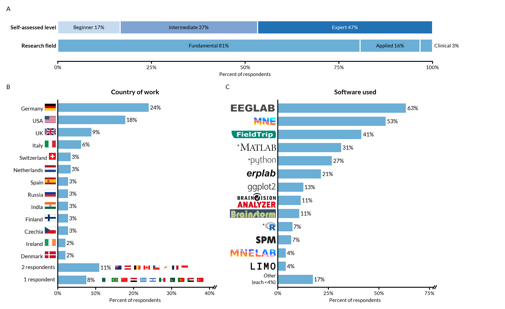
Print PDF, full width: participant_characteristics_icons_compact.pdf
Details: Sample and Quality control.
RQ1. Pattern comparison: do uncertainty visualizations keep the pattern recognisable?
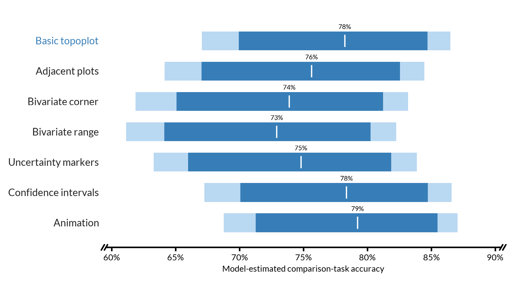
Print PDF, one column: comparison_accuracy_ambiguation_figure.pdf
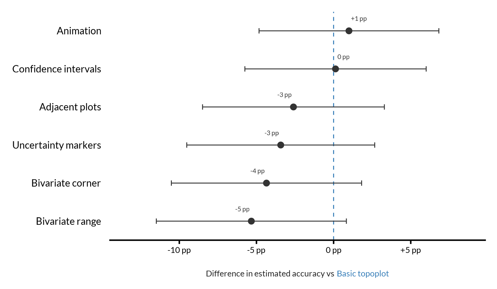
Print PDF, one column: comparison_accuracy_contrast_figure.pdf
Conclusion. Adding uncertainty to a topoplot left the spatial pattern about as recognisable as in the basic map. Participants matched the target pattern correctly in roughly three of four trials with every visualization.
- Tested: the overall test of visualization type was borderline (χ²(6) = 12.61, p = .0497), and none of the six adjusted contrasts with Basic topoplot excluded zero.
- Descriptive: the two bivariate colour maps had the lowest estimates, Bivariate range −5.3 pp (95% CI −11.5 to +0.8) and Bivariate corner −4.3 pp (−10.5 to +1.8).
- Interpretation: the intervals are compatible both with no cost and with a moderate cost of about 5–10 pp for the bivariate maps. Encodings that mix voltage and uncertainty in one colour are the likeliest to blur the pattern, but this study cannot show it.
Details: Task 1.
RQ2. Uncertainty integration: can users find the regions with the strongest signal?
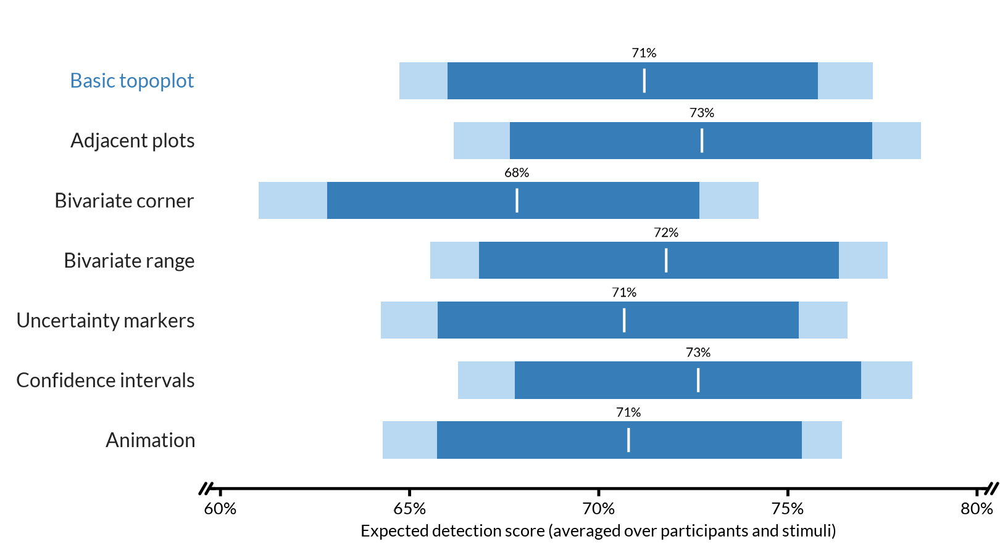
Print PDF, one column: detection_score_ambiguation_figure.pdf
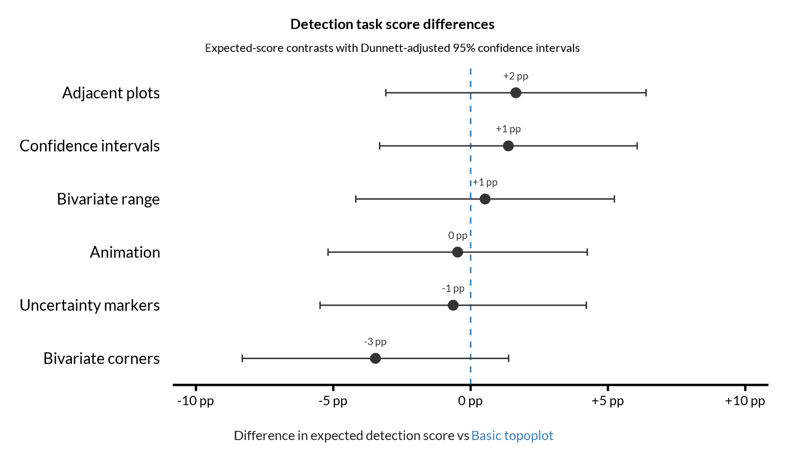
Print PDF, one column: detection_score_contrast_figure.pdf
Conclusion. No visualization clearly helped participants combine signal and uncertainty better than the basic map, which shows no uncertainty at all. What made detection easy or hard was mainly the stimulus, not the visualization.
- Tested: once each image (stimulus × visualization) had its own random intercept, the overall test of visualization type on the detection score was not significant (χ²(6) = 8.7, p = .19).
- Descriptive: expected detection scores ranged only from 67.8% (Bivariate corner) to 72.7% (Adjacent plots), with Basic topoplot at 71.2%. Hit rates ranged from 0% to 70% across the 30 stimuli.
- Interpretation: the uncertainty displays may help users get close to the strongest region rather than hit it exactly. A second possibility is that participants partly looked for the voltage peak instead of the SNR peak: for 4 of 10 P3 stimuli, the most chosen region ranked only 10th–14th by score.
Details: Task 2.
Hits, neighbour hits and runner-up hits
A click is a hit when it selects the peak region, a neighbour hit when it selects a region bordering the peak, and a runner-up hit when it selects one of the next four strongest regions (ranks 2–5).
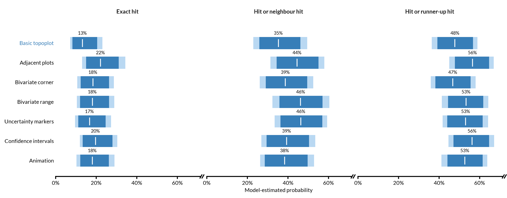
Print PDF (vector, scale to full width): hit_miss_ambiguation_figure.pdf

Print PDF, full width: task2_hits_misses_pattern_by_vistype.pdf
- Tested: no overall test of visualization type was significant: exact hit χ²(6) = 8.4, p = .21; hit or neighbour hit χ²(6) = 9.3, p = .16; hit or runner-up hit χ²(6) = 7.4, p = .29.
- Tested, exploratory: one adjusted contrast excluded no difference: Adjacent plots gave more exact hits than Basic topoplot (odds ratio 2.48, 95% CI 1.06–5.83, p = .032). Because the overall test was not significant, it needs confirmation in a new study.
- Descriptive: exact hits were rare for every visualization (15%–21%), though far above chance (1.6%). Counting neighbour hits, Uncertainty markers landed on or next to the peak most often (49% of responses) and Basic topoplot least often (38%). Runner-up hits ranged from 27% (Bivariate corner) to 37% (Confidence intervals), against 6.6% by chance.
Centre bias (exploratory)
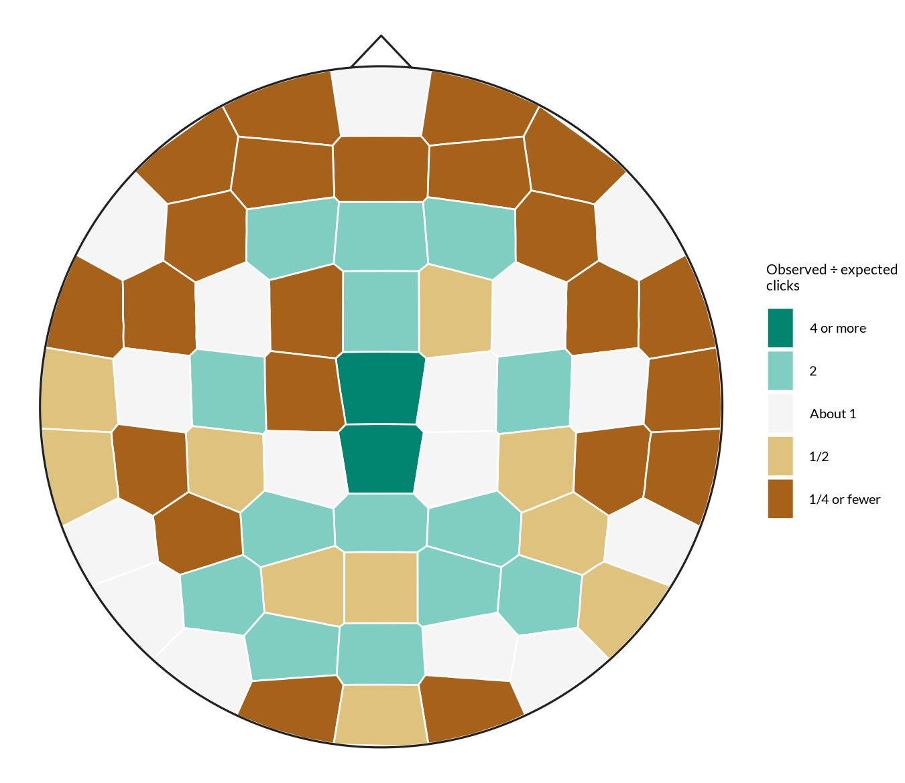
Print PDF (vector, scale to column width): centre_bias_head_map.pdf
- Descriptive: 26 of the 30 stimuli had their peak on the border of the head, yet border regions received only 36% of the clicks, about their share of the grid; the centre ring, which held no peak, received 16%.
- Tested, exploratory: for regions with the same score, a border region received 0.23 times as many clicks as an interior one (95% CI 0.20–0.28). Every visualization showed this, from 0.12 (Uncertainty markers) to 0.49 (Bivariate corner).
- Interpretation: participants either avoided the edge of the map or, as EEG researchers, distrusted maxima there, where the values are extrapolated beyond the outermost electrodes. Either way, this centre bias likely explains much of why exact hits were rare, because most peaks lay on the border.
Details: Hit or miss.
RQ3. Subjective evaluation: how do users judge the approaches?
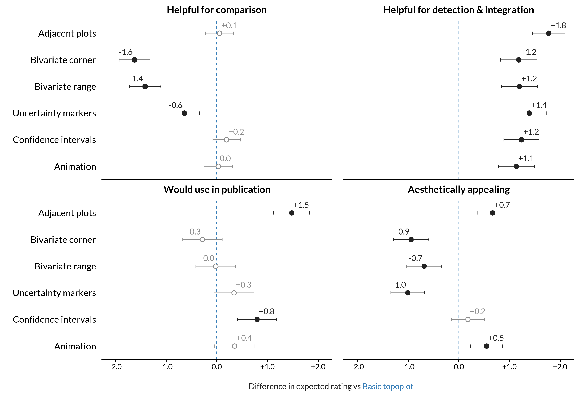
Print PDF, full width: likert_contrast_figure.pdf
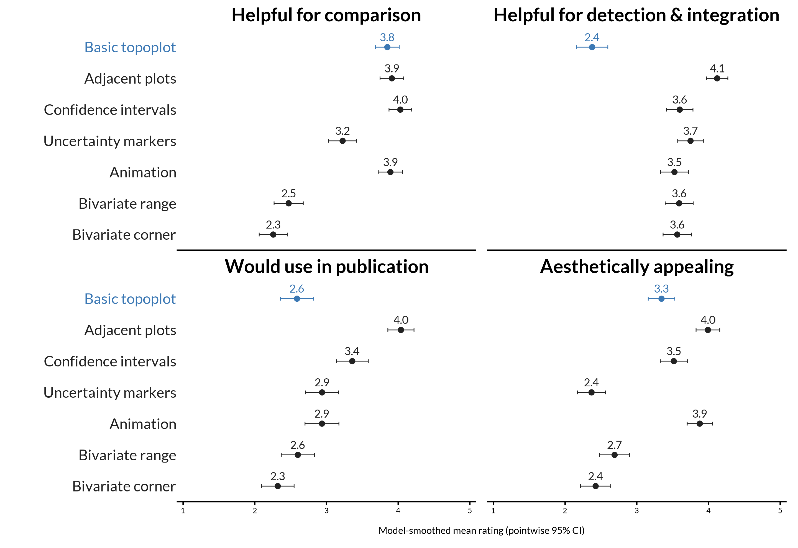
Print PDF, full width: likert_estimate_figure.pdf
Conclusion. Participants clearly wanted uncertainty for detection, but not at the price of a harder-to-read map. Designs that keep the familiar voltage map intact (Adjacent plots, Confidence intervals) were preferred. Designs that alter its colours or cover it (the bivariate maps, Uncertainty markers) were penalised for comparison and appearance.
- Tested: all six uncertainty visualizations were rated more helpful for detection than Basic topoplot (+1.13 to +1.77 points on the 1–5 scale). For comparison, the bivariate maps (−1.62 corner, −1.42 range) and Uncertainty markers (−0.64) were rated less helpful.
- Tested: only Adjacent plots (+1.48) and Confidence intervals (+0.79) were more likely to be used in a publication than Basic topoplot. Adjacent plots (+0.66) and Animation (+0.55) were rated more appealing; Uncertainty markers (−1.01), Bivariate corner (−0.94) and Bivariate range (−0.68) less appealing.
- Tested: these conclusions held without the 7 flagged participants and in a linear mixed model (24 of 24 contrasts unchanged).
- Interpretation: ratings and comments agree with each other but not with performance. Preferences therefore reflect familiarity and reading effort more than measurable accuracy; they still matter, because a display that researchers will not use communicates nothing.
Details: Subjective evaluation.
What participants wrote
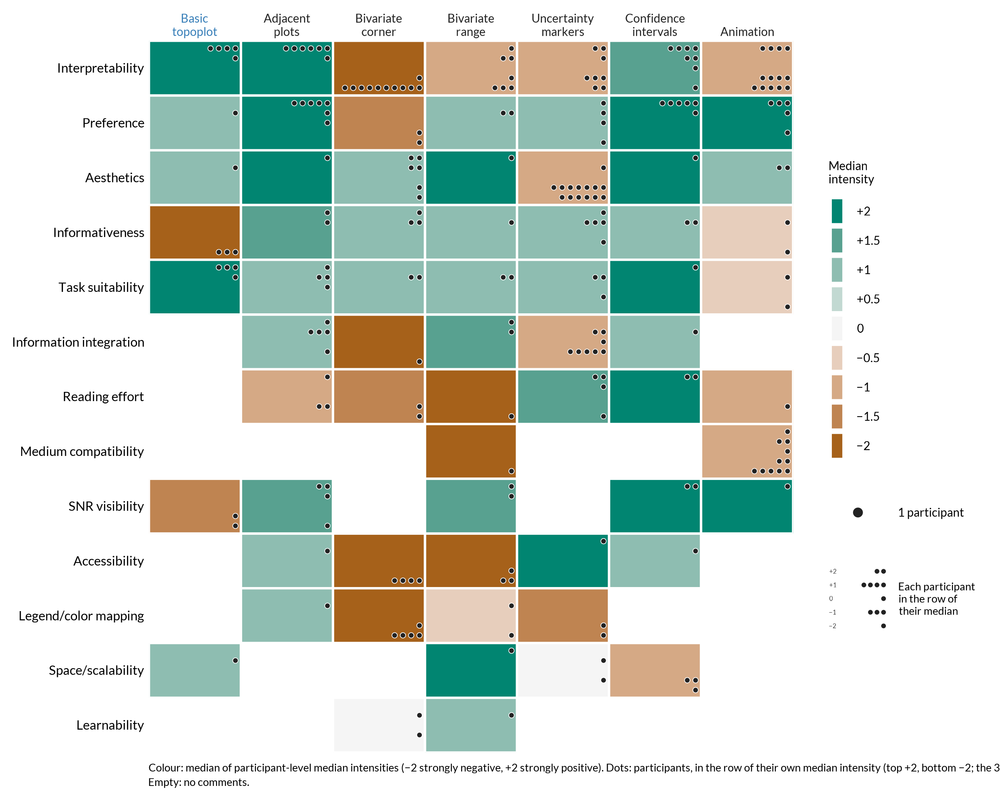
Print PDF (vector, scale to full width): a305_intensity_distribution_figure.pdf
- Descriptive: 70 participants commented. Feedback was mostly positive for Adjacent plots (29 positive, 4 negative) and Confidence intervals (22, 4), mixed for Uncertainty markers (20, 30) and Animation (16, 20), and mostly negative for Bivariate corner (10, 28). By theme:
- Interpretability: nearly unanimous for two designs. 10 of the 11 participants who discussed Bivariate corner gave the strongest negative rating, and all 7 who discussed Adjacent plots were positive. Animation split opinion: 9 negative, 4 strongly positive.
- Preference: Adjacent plots (6 of 7) and Confidence intervals (6 of 6) were preferred.
- Aesthetics: 13 of the 14 participants who discussed the look of Uncertainty markers were negative.
- Medium compatibility (suitability for print, papers and talks): 7 of the 11 participants who discussed Animation were negative, but its ratings spanned the whole scale.
- Interpretation: where the comments split, the median hides real disagreement. Animation divides participants rather than leaving them lukewarm, so whether to use it depends on the audience and the medium.
Details: Open-ended feedback.
Completion time
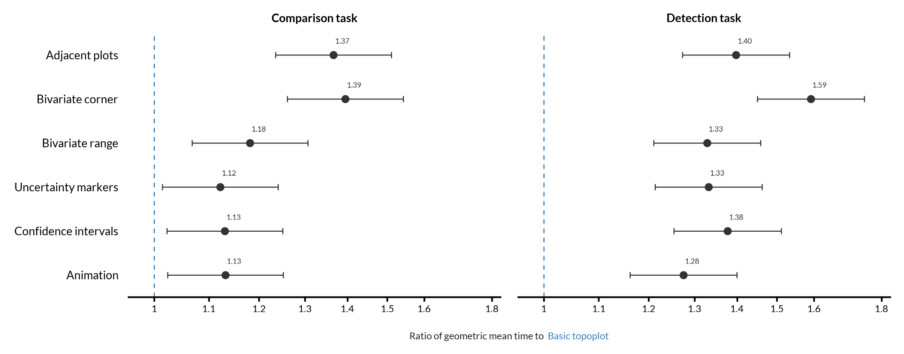
Print PDF, full width: time_ratio_figure.pdf
- Tested: every uncertainty visualization took longer than Basic topoplot (about 10 s per trial) in both tasks: 12%–39% longer in Task 1 and 28%–59% longer in Task 2. Bivariate corner was the slowest in both tasks (×1.39 and ×1.59).
- Interpretation: the extra time is the cost of reading a second quantity. It was not repaid by higher accuracy, so it is best spent where uncertainty changes a decision.
Details and figures: Time analysis.
Recommendations
The recommendations combine the performance results, the ratings and the comments. Since performance hardly differed, they rest mainly on time, ratings and comments, and are therefore interpretations.
| Visualization | Strengths | Limitations | Suitable use |
|---|---|---|---|
| Basic topoplot | Fastest to read; familiar; pattern comparison as good as any alternative | Shows no uncertainty; rated least helpful for detection | Quick overviews and pattern comparison when uncertainty is reported elsewhere |
| Adjacent plots | Highest ratings for detection, publication and appeal; mostly positive comments; most exact hits (exploratory) | About 40% slower; two maps to compare region by region | Default choice for papers and reports that show uncertainty |
| Bivariate corner | Single compact map | Lowest rating for comparison, low appeal; slowest; mostly negative comments, on interpretability and the colour legend | Not recommended for EEG/ERP topoplots |
| Bivariate range | Single compact map that keeps the cool–warm polarity | Rated less helpful for comparison and less appealing; lowest Task 1 estimate† | Only when space allows one map; prefer it to the corner version |
| Uncertainty markers | Keeps the voltage colours; most hits or neighbour hits†; rated helpful for detection | Rated least appealing; markers cover the map; less helpful for comparison | Exploratory analysis of where an effect is reliable |
| Confidence intervals | Highest rating for comparison†; rated more likely to be used in publications; mostly positive comments | Three maps; shows ±1 SE, which must be stated | Papers and teaching where the range of plausible maps matters |
| Animation | Rated more appealing; helpful for detection | Does not suit print; comments found it hard to interpret and unsuited to papers | Talks, web pages and teaching, not print |
† Not significantly different from Basic topoplot.
Limits of these conclusions
- The stimuli were 30 sampled ERP topographies, ten per pattern. The results generalise to new data only as far as these represent the topographies researchers encounter.
- “No clear difference” does not mean “no difference”: with 150 participants, the intervals still allow differences of several percentage points in accuracy and score.
- The rating items listed the visualizations in the same order for every participant (Basic topoplot last), so order effects cannot be separated from preferences.
- The open-ended comments were coded by language models and have not yet been checked by a human coder; their counts are provisional.
- The Task 2 score rewards the SNR peak; where participants aimed for the voltage peak, the score may understate their performance.